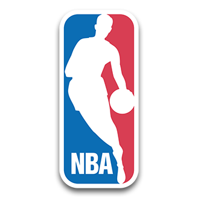

NBA Daily News

Markelle Fultz is earning the trust of Magic coach Steve Clifford.
ATLANTA -- You can see glimpses of it, flashes even, of the bounce and instincts that made him the No. 1 overall pick in the 2017 Draft. It’s still there. The lift off the floor to battle with players four and five inches taller for rebounds, the behind-the-back, no-look pass on a dead sprint that a teammate couldn’t finish. It’s not as consistent as he might like it to be, not yet. And there are still those awkward moments, those times when he looks like he’s leaning back as he rises to shoot a jump shot or that hitch he’s worked so hard to eliminate from his form causes a momentary pause in his motion.
Last updated 3 mins ago

Kevon Looney was set for an expanded role with the retooled Warriors this season.
SAN FRANCISCO (AP) -- Golden State Warriors forward Kevon Looney will miss at least two games because of a hamstring injury. Looney sat out the entire preseason with a strained right hamstring, then started the season opener Thursday before dealing with tightness in the hamstring again. He didn’t play in the second half of a 141-122 loss to the Los Angeles Clippers in the first game at new Chase Center. The Warriors play Sunday at Oklahoma City and Monday at New Orleans.
Last updated 7 mins ago